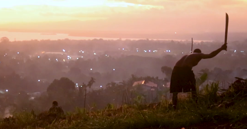

PROJECTS & INVESTMENTS

1. Ongoing Projects
Ongoing projects include the Alotau-Gurney Highway upgrade, expansion of rural electrification, construction of new hospitals, and development of Special Economic Zones. (Infrastructure, economic, and social projects.)
Milne Bay is currently implementing key projects in infrastructure, economic development, and social services to improve the quality of life for its citizens.
- INFRASTRUCTURE DEVELOPMENT:
- Roads & Bridges: Expansion and upgrading of the Alotau-Gurney Highway, as well as rural road rehabilitation to improve connectivity.
- Maritime Infrastructure: Upgrading of wharves, jetties, and small ports to support inter-island trade and tourism.
- Rural Electrification: Extension of renewable energy projects (solar, hydro, and hybrid systems) to off-grid communities.
- ECONOMIC PROJECTS:
- Establishment of agriculture cooperatives to boost oil palm, vanilla, cocoa, and coconut production.
- Promotion of sustainable fisheries and aquaculture for increased seafood exports and food security.
- Expansion of ecotourism facilities, including community-based tourism in the Trobriand Islands and Louisiade Archipelago.
- SOCIAL DEVELOPMENT:
- Construction and renovation of health centers and district hospitals to enhance healthcare accessibility.
- Expansion of technical and vocational education training (TVET) programs to equip youth with job-ready skills.
- Community-driven initiatives focusing on women’s empowerment, youth entrepreneurship, and climate resilience.
Investment Opportunities
Business opportunities in agriculture, fisheries, tourism, etc.
Milne Bay Province presents lucrative business opportunities across multiple sectors, with incentives for local and foreign investors.
- AGRICULTURE & AGRO-PROCESSING:
- Large-scale oil palm, cocoa, and vanilla plantations.
- Processing of copra, coconut oil, and value-added agricultural products.
- FISHERIES & MARINE RESOURCES:
- Expansion of tuna and seafood processing facilities.
- Sustainable pearl farming and seaweed cultivation.
- Development of coastal and deep-sea fishing operations.
- TOURISM & HOSPITALITY:
- Development of island resorts, eco-lodges, and cultural tourism sites.
- Investment in marine tourism activities, such as diving, snorkeling, and cruise operations.
- RENEWABLE ENERGY & INFRASTRUCTURE:
- Expansion of solar, hydro, and biomass energy projects to support rural electrification.
- Investment in modern transport and logistics to boost trade efficiency.
Funding & Partnerships

Sources of financing (Government, Private Sector, Donors).
A multi-source funding strategy is being pursued to finance provincial projects, with a focus on public-private partnerships (PPPs) and donor support.
- GOVERNMENT FINANCING:
- National and provincial budget allocations for priority sectors.
- District Development Grants (DDG) and Provincial Service Improvement Program (PSIP) funding.
- PRIVATE SECTOR INVESTMENTS:
- Encouraging foreign direct investment (FDI) and local business expansion.
- Partnerships with agribusiness firms, tourism operators, and manufacturing industries.
- DEVELOPMENT PARTNERS & DONORS:
- Support from international organizations (ADB, World Bank, UNDP, EU, JICA, Australia Aid, China Aid).
- Collaboration with NGOs and church groups for community-based development projects.
By leveraging these ongoing projects, investment opportunities, and diverse funding sources, Milne Bay Province is positioning itself as a key player in sustainable economic transformation while ensuring long-term prosperity for its people.
Contact

Email: milnbayprovgov@outlook.com | Phone: +675 7273 9000 | Address: Milne Bay Provincial Government, Alotau, Papua New Guinea.